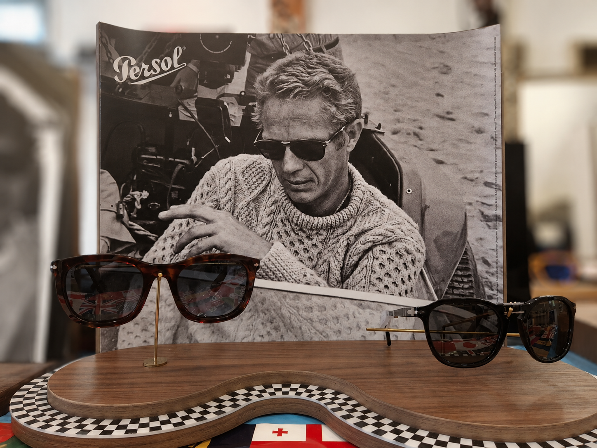

Une histoire de regard et de confiance
Depuis plus de 7 ans, Optique Beauval accompagne ses clients avec exigence et proximité.

Née d'une passion pour le détail
Optique Beauval a ouvert ses portes en 2019, portée par une conviction simple : bien voir commence par être bien écouté. Depuis, la boutique s'est imposée comme une adresse de confiance dans le quartier.
Chaque monture est sélectionnée avec soin, chaque client reçoit un temps d'écoute réel. C'est cette attention qui fait la différence, visite après visite.
Un atelier équipé, en boutique
Réglages, réparations, montage des verres : la majorité de nos interventions sont réalisées sur place, avec un matériel de précision habituellement réservé aux laboratoires.
Résultat : des délais courts, un suivi direct par notre équipe, et des lunettes qui vous reviennent parfaitement ajustées.

Ce qui nous guide au quotidien
Passion
Un métier choisi et pratiqué avec sincérité, jour après jour.
Exigence
Une sélection rigoureuse de produits et de partenaires de qualité.
Proximité
Une relation humaine, construite dans la durée avec chaque client.
Questions fréquentes
Non, vous êtes les bienvenus sans rendez-vous. Pour un examen de vue ou un conseil approfondi, nous vous recommandons toutefois d'en fixer un afin d'éviter l'attente.
Oui, nous travaillons en tiers payant avec la majorité des mutuelles. N'hésitez pas à nous transmettre votre carte pour vérifier votre prise en charge.
Oui, nous réparons et réglons la plupart des montures, même celles qui n'ont pas été achetées chez nous, dans la mesure du possible.
Comptez en moyenne 10 à 15 jours ouvrés selon la complexité des verres commandés et la disponibilité de la monture choisie.
Oui, journalières, mensuelles et toriques. Notre équipe vous accompagne pour l'adaptation et le premier essai en boutique.